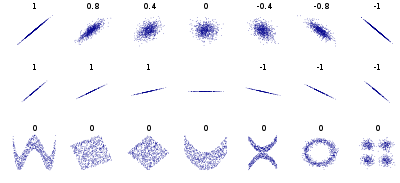

Stat 435 Lecture Notes 1b
Xiongzhi Chen
Washington State University

Review: sample statistics
Overview
In practice, we do not have full information on a data-generating process. Hence, we do fully know the random variable that is used to model the process. Instead, we only have observations from the process.
To statistically learn the process, various sample statistics are obtained from these observations (in contrast to population statistics). However, these observations inherit uncertainty from the process and are random variables too. So, a statistic has its own probabilistic behavior.
Sample mean and variance
Let \(X\) be a random variable with expectation \(\mu=E(X)\) and variance \(\sigma^2=Var(X)\), and suppose \(x_1,x_2,\ldots,x_n\) are \(n\) observations from \(X\).
The sample mean of \(X\) is defined as \(\hat{\mu}_n = n^{-1}\sum_{i=1}^n x_i\)
The sample variance of \(X\) is defined as \[\hat{\sigma}_n^2 = (n-1)^{-1}\sum_{i=1}^n (x_i - \hat{\mu}_n)^2\]
Note: sample mean and sample variance estimate population mean and population variance, respectively.
Sample mean and variance
Suppose the \(n\) \(x_i\)’s are mutually independent,
What is the expectation of the sample mean \(\hat{\mu}_n\)?
What is the variance of \(\hat{\mu}_n\)? Is \(\hat{\mu}_n\) less variable than \(X\)?
What is the expectation of the sample variance \(\hat{\sigma}_n^2\)? Is \(\hat{\sigma}_n^2\) less variable than \(X\)?
Note: If \(x_i,i=1,\ldots,n\) are independent and follow the same distribution, they are called “i.i.d.” and also called a random sample (of size \(n\)) from \(X\).
Sample mean
Variance of sample mean \(\hat{\mu}_n\) under i.i.d. assumption:
Sample covariance
Let \(x_i,i=1,\ldots,n\) be \(n\) observations from \(X\), and \(y_i,i=1,\ldots,n\) those from \(Y\).
The sampe covariance between \(X\) and \(Y\) is defined as \[\widehat{Cov}(X,Y)= (n-1)^{-1} \sum_{i=1}^n (x_i-\hat{\mu}_{n,X})(y_i-\hat{\mu}_{n,Y}),\] where \(\hat{\mu}_{n,X}\) is the sample mean for \(X\), and \(\hat{\mu}_{n,Y}\) the sample mean for \(Y\)
Note: when \(X=Y\), sample covariance becomes sample variance.
Sample correlation
The sample corretion between \(X\) and \(Y\) is defined as \[\widehat{Cor}(X,Y)= \frac{\widehat{Cov}(X,Y)}{\hat{\sigma}_{n,X}\hat{\sigma}_{n,Y}},\] where \(\hat{\sigma}_{n,X}\) is the sample standard deviation of \(X\), and \(\hat{\sigma}_{n,Y}\) that for \(Y\).
Note: sample covariance and sample correlation estimate population covariance and population correlation, respectively.
Correlation

Four sets of data with the same correlation of 0.816. (Image credit: wikipedia)
Correlation

Samples with a given population correlation. (Image credit: wikipedia)
Sample correlation
Suppose \(X\) and \(Y\) are independent. Given a random sample of size \(n\) from \(X\) and \(Y\), respectively, let \(r_n\) be the sample correlation computed from the two random samples.
Should \(r_n\) be \(0\)? Why or why not?
Is it more likely for \(r_n\) to be \(0\) or not \(0\)? Why or why not?
Review: hypothesis testing
Hypothesis and test statistic
Let \(X\) be a random variable. Suppose we are interested in a statistic \(\theta\) of \(X\), such as its mean, median, or variance. Then
- The natural state for \(\theta\) is often set (or referred to) as the null hypothesis for \(\theta\) and denoted by \(H_0\);
- The alternative hypothesis for \(\theta\) is often the complement to \(H_0\) and denoted by \(H_a\) (or \(H_1\)).
Often a test statistic \(T\) is constructed, so that its distribution is known if the null hypothesis is true, and then a decision rule is obtained to either reject or retain \(H_0\) under some error criterion.
Hypothesis test
For example, if we want to assess if a pesticide is able to kill grasshoppers, we can let \(\mu_1\) be the mean number and \(\mu_2\) the mean number of grasshoppers respectively prior and after pesticide usage, then
- the null hypothesis can be set as \(H_0: \mu_1- \mu_2= 0\), and
- the alternative hypothesis as \(H_a: \mu_1- \mu_2 \ne 0\)
A test statistic for this can be set as \(d\), the difference between the sample mean numbers of grasshoppers prior and after pesticide usage. Once we know the distribution of \(d\) under \(H_0\), a decision rule can be obtained to reject or retain \(H_0\).
Type I, II error and p-value
- The Type I error of a test is the probability of rejecting the null hypothesis \(H_0\) when it is true, while the Type II error of a test is the probability of retaining \(H_0\) when \(H_a\) is true.
- The p-value of a test is the smallest Type I error the test can have.
- The power of a test is the probability that it rejects \(H_0\) when \(H_a\) true.
Often a test is conducted under a contraint on its Type I error and attempts to be the most powerful (among all tests with certain properties).
Student t test
Let \(X\) be a Gaussian random variable with mean \(\mu\) and standard deviation \(\sigma>0\). Suppose we want to test \(H_0: \mu=0\) versus \(H_a: \mu \ne 0\), given a random sample \(x_1,x_2,\ldots,x_n\) of size \(n\).
Then we can compute the sample mean \(\hat{\mu}_n = n^{-1}\sum_{i=1}^n x_i\) and sample variance \[\hat{\sigma}_n^2 = (n-1)^{-1}\sum_{i=1}^n (x_i - \hat{\mu}_n)^2\]
Student t test
The test statistic \(T = \frac{\hat{\mu}_n}{\hat{\sigma}_n/\sqrt{n}}\) follows a Student t distribution, denoted by \(F_{0,n-1}\), with centrality parameter \(0\) and degree of freedom \(n-1\).
At Type I error level \(\alpha\), we reject \(H_0: \mu=0\) if \(\vert T \vert > t_{0,n-1}(1-\alpha/2)\), where \(t_{0,n-1}(1-\alpha/2)\) is the upper \((1-\alpha/2) \times 100\)-th percentile of the distribution \(F_{0,n-1}\).
The two-sided p-value for the test is \(2 \times F_{0,n-1}(-\vert T \vert)\).
Note: this example is a two-sided test.
Confidence interval
For \(s \in [0,1]\), a \((1-s) \times 100\%\) confidence interval (CI) is an interval that contains an unknown population parameter with probability \(1-s\).
Often, the distribution of a test statistic under the null hypothesis gives sufficient information on constructing a CI.
Review: large sample properties
Strong law of large numbers
The strong law of large numbers (SLLN) describes the behavior of a sequence of random variables that are indexed by sample size, such that as the sample size tends to infinity, it is almost certain that the limiting random variable assumes a single value, i.e., its expectation.
The SLLN is the strongest large-sample characterization of the probabilistic behavior of a sequence of random variables. However, it cannot be used for hypothesis testing on an estimate since we only have finitely many observations.
Strong law of large numbers
Let \(X\) be a random variable with expectation \(\mu=E(X)\) and variance \(\sigma^2=Var(X)\), and suppose \(x_1,x_2,\ldots,x_n\) a random sample of sample size \(n\) for \(X\).
- The sequence of sample means \[\hat{\mu}_n = n^{-1}\sum_{i=1}^n x_i,\] indexed by \(n\), always has expectation \(\mu\), and satisfies the SLLN, i.e., \[\Pr\left(\lim_{n \to \infty} \hat{\mu}_n = \mu\right)=1.\]
Strong law of large numbers
The sequence of sample variances \[\hat{\sigma}_n^2 = (n-1)^{-1}\sum_{i=1}^n (x_i - \hat{\mu}_n)^2,\] indexed by \(n\), always has expectation \(\sigma^2\), and satisfied the SLLN, i.e., \[\Pr\left(\lim_{n \to \infty} \hat{\sigma}_n^2 = \sigma^2\right)=1.\]
Central limit theorem
The central limit theorem (CLT) describes the limiting behavior of a sequence of standardized estimates that are obtained from a set of weakly interacting random variables. The CLT and the Glivenko-Cantelli theorem form the corner stone of statistical learning.
In particular, the CLT enables us to learn a data-generating process whenever we have a random sample of relatively large size. Unlike the SLLN, the CLT can be used to conduct hypothesis testing and construct confidence intervals.
Central limit theorem
Let \(X\) be a random variable with expectation \(\mu=E(X)\) and variance \(\sigma^2=Var(X)\), and suppose \(x_1,x_2,\ldots,x_n\) a random sample of sample size \(n\) for \(X\).
- The sample mean \(\hat{\mu}_n = n^{-1}\sum_{i=1}^n x_i\) has expectation \(\mu\) and standard deviation \(\sigma/\sqrt{n}\)
- The standardized sequence of sample means \[\tilde{\mu}_n = \frac{\hat{\mu}_n - \mu}{\sigma/\sqrt{n}},\] indexed by \(n\), satisfies the CLT.
Central limit theorem
The standardized sequence of sample means \[\tilde{\mu}_n = \frac{\hat{\mu}_n - \mu}{\sigma/\sqrt{n}}\] satisfies the CLT.
Namely, as \(n\) becomes larger, the distribution of \(\tilde{\mu}_n\) becomes closer to the distribution of \(Z\), the standard Gaussian random variable.
In mathematical notations, the above is \[\Pr(\lim_{n \to \infty} \tilde{\mu}_n \le x) = \Pr(Z \le x) \text{ for any } x.\]
Remarks
An animation for CLT: https://yihui.org/animation/example/clt-ani/
The SLLN and CLT are frequently used (sometimes implicitly) in practices of statistical learning and statistical thinking
License and session Information
> sessionInfo()
R version 3.5.0 (2018-04-23)
Platform: x86_64-w64-mingw32/x64 (64-bit)
Running under: Windows 7 x64 (build 7601) Service Pack 1
Matrix products: default
locale:
[1] LC_COLLATE=English_United States.1252
[2] LC_CTYPE=English_United States.1252
[3] LC_MONETARY=English_United States.1252
[4] LC_NUMERIC=C
[5] LC_TIME=English_United States.1252
attached base packages:
[1] stats graphics grDevices utils datasets methods
[7] base
other attached packages:
[1] knitr_1.21
loaded via a namespace (and not attached):
[1] compiler_3.5.0 magrittr_1.5 tools_3.5.0
[4] htmltools_0.3.6 revealjs_0.9 yaml_2.2.0
[7] Rcpp_1.0.0 stringi_1.2.4 rmarkdown_1.11
[10] stringr_1.3.1 xfun_0.4 digest_0.6.18
[13] evaluate_0.12